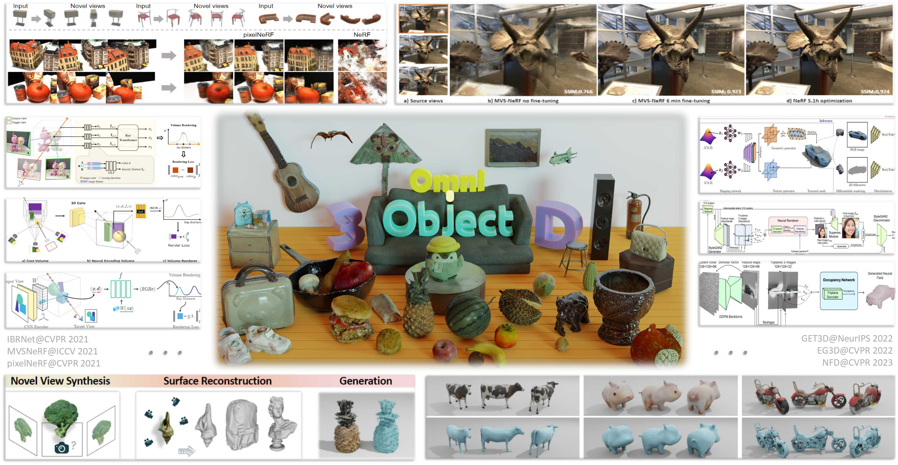

| OmniObject3D Challenge @ ICCV 2023 | ||
Hosted by AI for 3D Content Creation WorkshopThe submission portal is now open until 23:59 UTC, September 15, 2023! | ||

Realistic 3D object modelling, especially from limited observations or random conditions, poses a significant challenge with broad applications in various vision and robotics tasks. To advance research in this field, we present the OmniObject3D dataset, a comprehensive collection of high-quality, real-scanned 3D objects with an extensive vocabulary.
In this challenge, we emphasize two fundamental problems: sparse-view reconstruction, involving the prediction of novel view images and 3D mesh from a limited set of input images, and 3D object generation, both conditionally and unconditionally.
In addition to the public training set, we have included a hidden test set specifically for the sparse-view reconstruction track. For both tracks, participants must submit their final prediction files based on the provided examples in our codebase. These submissions will be thoroughly evaluated to determine the winners.
Users can participate in one or both of the following tracks:
This phase evaluates algorithms for novel view synthesis and surface reconstruction given a few posed images of each object. The number of input images will be 1, 2, and 3, as provided in the test set here. Submit the predicted novel view images and extracted point clouds in a .zip file. Please refer to the tools and provided examples here and carefully check the format to ensure a successful submission.
This phase evaluates algorithms for realistic 3D object generation on the OmniObject3D dataset. Submit the post-processed results on the generated objects in a .zip files. Please refer to the tools and provided examples here and carefully check the format to ensure a successful submission.
We evaluate the novel view synthesis and 3D reconstruction accuracy by computing the PSNR on 10 test views and Chamfer Distance (CD) between the reconstruction and the ground truth, respectively. PSNR would be the main metric for the Top-5 selection, while CD (under the standard point cloud sampling resolution provided in our codebase) would also be an important factor for the determination of the final award winners. The results are averaged across the whole test set for overall evaluation criteria.
During the public submission stage, we evaluate the generation performance by computing the FID score, which would be the main metric for the Top-10 selection. For the determination of the final award winners, user study after the private submission would be the most important factor, and we would also take quantitative evaluation, including FID, Cov, and MMD, into consideration.
The Top-3 teams from each track will emerge as the ultimate award winners. They will receive timely notifications just before the workshop and will be officially announced during the event. Winning teams will be awarded certificates of recognition, and they will share in a bonus pool consisting of thousands of dollars in rewards.
Furthermore, the Champion teams will be invited to deliver an oral presentation during the workshop, which provides a platform to showcase their outstanding work and share valuable insights with the participants.
Aug. 01, 2023 . Submission start date.
Sep. 08, 2023 . Track-2 public submission deadline.
Sep. 12, 2023 . Track-2 private submission deadline.
Sep. 15, 2023 . Track-1 public submission deadline.
Sep. 22, 2023 . Technical report, source code, and pre-trained model deadline.
Oct. 02, 2023 . Awards at ICCV Workshop.
1. Public submission for Track-2 (3D object generation) is closed by Sep. 08; during the period of private submission (Sep. 08 - 12), the Top-10 of participants in this track will be notified and are required to submit the raw data of rendered images and 3D objects before post-processing, which were used during the public submission period, to us for a comprehensive user study. The results of user study will serve as the most critical metric for the determination of winners.
2. By Sep. 22, the Top-5 participants in Track-1 and Top-10 participants in Track-2 are required to submit a short technical report (2-4 pages of ICCV two-column template that briefly introduces their technical contributions and analysis of the results), source code, pre-trained model of their methods. The code would ONLY be used for verifying the legality of the algorithm and would NOT be further distributed. The legality of their method and its reproducibility will also be crucial factors in determining the winners.
Please visit our CodaLab page for more details.